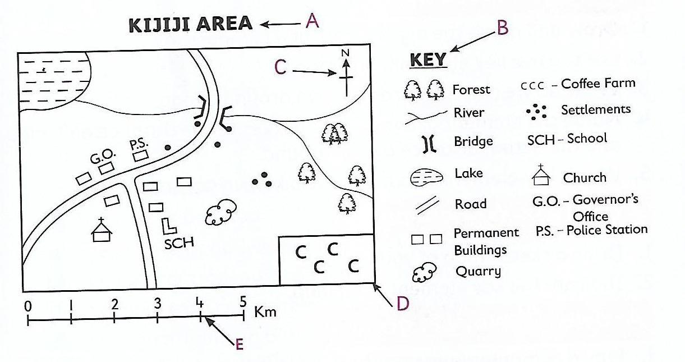

A map is a drawing that represents the earth or part of it on a flat surface.
Key Elements of a Map
- Title - is the name given to a map. It is usually written at the top or the bottom of the map.
- Frame - is the border that is drawn around a map.
- Key/Legend - contains the symbols and signs that have been used on a map. It shows what the signs and symbols represent. Symbols are small pictures, drawings or letters. They represent real objects on a map.
- Scale - shows the relationship between the distance on the map and the real distance on the ground.
- Compass - shows the direction of places on a map.
A good map should have these five key elements.
Importance of Maps
- Locating the directions and position of places
- Identifying the direction and position of places
- Identifying our neighbors
- Locating various physical features
- Guiding tourists to their destination
Map Interpretation
Map interpretation refers to giving meaning to the features and symbols used on a map. We use the key elements of a map to read and interpret maps. Symbols and signs help us identify different features, areas, and activities on a map, e.g.:
- The presence of a quarry shows that mining is taking place in the area.
- A market symbol shows that trading activities are taking place in the area.
- A game reserve symbol shows the presence of wild animals.
- A sawmill symbol shows that timber processing takes place in the area.
- Scrubland symbol shows that the area is dry.